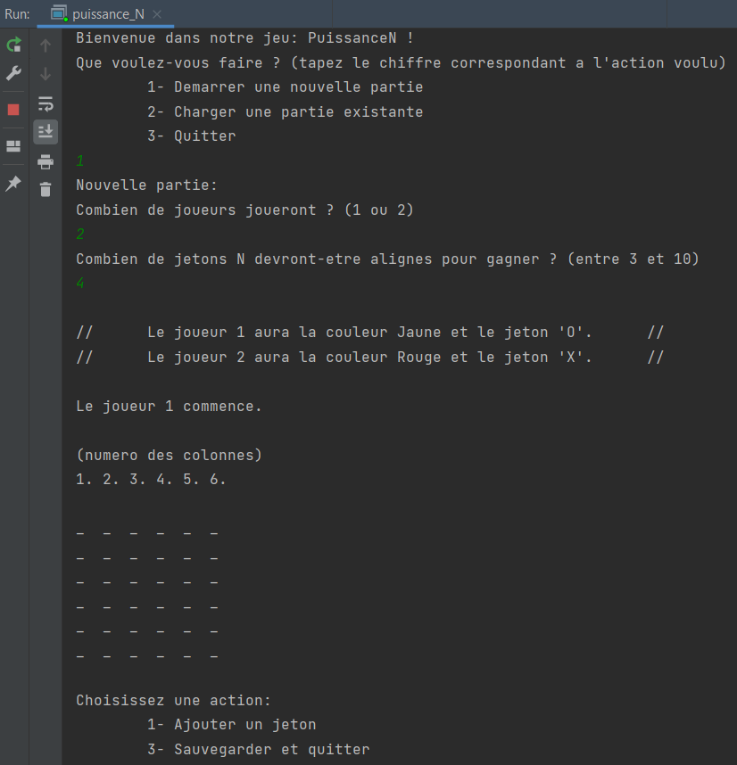

Hey, je suis étudiant en école d'ingénieur.
Je me présente :
Je m'appelle Edouard, j'ai 20 ans, je suis passioné par l'informatique et j'aspire à devenir
ingénieur dans ce domaine.
Je suis actuellement en deuxième année de prépa intégrée en Ecole d'Ingénieur à l'UTBM (Université de technologie
de Belfort-Montbéliard). Et j'ai eu la chance de partir pour mon dernier semestre de prépa dans une université
partenaire en Pologne dans l'Ecole Polytechnique de Lodz (Politechnika Lodzka) avec tous les cours en anglais.
De ce fait, je suis à la recherche d'une alternance pour la rentrée de septembre 2022,
je maîtrise très bien le langage C et les logiciels sous licence windows, jetbrains et depuis le systeme
d'exploitation Linux, de plus je peux coder dans tous les langages suivant : -VBA -CSS -HTML -PHP -Python -SQL.
Concernant ma personnalité :
Je suis passé par un collège et lycée millitiare la rigueur et le sérieux
font partis de moi, de plus j'y ai
appris la cohésion, le travail de groupe. Je suis quelqu'un qui attache beaucoup d'importance à chaque détails,
j'adore la victoire.
Durant toute ma scolarité j'ai été délégué, je n'ai donc aucun soucis à m'exprimer face à de hautes autoritées et
j'ai aussi un esprit de leader. J'ai toujours apprécié les sports d'équipe
et lorsque je joue en équipe mon seul objectif est de la faire gagner.
Sur ce site vous pourrez trouver tous mes travaux, si vous voulez en savoir plus, il vous suffira de cliquer sur
"Mes projets"
qui vous emmènera directement vers mon lien Github.
Et vous pouvez aussi trouver mon Curriculum Vitae en haut à
droitre de la page.
Projets réalisés
Un puissance N jouable dans le compilateur
Pour réalisé ce jeu, nous étions 4. C'est un Puissance N, c'est à dire que l'on peut choisir le nombre de jetons à alignés. De plus ce jeu est capable d'enregistrer les anciennes parties et il y a aussi la possibilité de jouer contre l'ordinateur. Il a été réalisé en C et est jouable depuis n'importe quel compilateur.
Dates 2021
Le jeu : La tour D'hanoi avec des animations
Pour créer ce jeu, j'ai utilisé le langage C et pour ce qui est de l'animation, j'ai utilisé la bibliotèque SDL2. Je l'ai réalisé en solo depuis le logiciel Geany sur Linux. J'ai un peu réinventé le jeu car il y a la possibilité de changer le nombre de Pegs et de disques.
Dates 2022
Le jeu : Tetris avec des animations
Pour créer ce jeu, j'ai de nouveau utilisé le langage C et pour ce qui est de l'animation, j'ai aussi utilisé SDL2. Je l'ai aussi réalisé en solo depuis le logiciel Geany sur Linux. Et je l'ai aussi un peu réinventé le jeu car il y a la possibilité de changer la taille de la grille.
Dates 2022
Un tracker solaire pour guider un panneau solaire
Nous avons construit ce projet à 4, pour ce projet, il nous fallait tout réaliser du début à la fin,
du cahier des charges jusqu'à la maquette finale. Nous avons utilisé des arduinos pour l'électronique et le code.
Et nous avons aussi reliés les données transmis par nos capteurs pour qu'ils puissent être visible depuis un site web.
Pour ce faire nous avons codé depuis MQTT et Node red. Et pour ce projet je me suis plutôt occuppé de la partie code
arduino et réalisation de la maquette 3D pour pouvoir l'imprimé ensuite. C'est aussi moi qui est rédigé le rapport et le PowerPoint.
lien vers le rapport technique :
Mon rapport
Dates 2022
Vous pouvez trouver tous les codes et les explications de ces jeux sur mon Github.